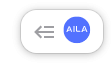

Artificial Inteligence Legal Assistant. AILA e uma ferramenta que se utiliza de tecnologias como inteligência artificial para auxiliar o peticionante a padronizar citações legais, assim como consulta do texto da lei e de jurisprudências que atuam sobre um dispositivo
About More
O AILA funciona atravez de um plug-in para o google chrome, para configuralo basta carregar no seu navegador, para isso siga os seguintes passos
não se esqueça de selecionar o botão para fixar a extensão na sua barra de tarefas do seu navegdor

tendo feito isso a extensão devera aparecer fixada no canto superior facilitando seu acesso
agora basta clicar nela e clicar em iniciar para poder utilizar a extensão
O AILA funciona atravez de um plug-in para o google chrome, para configuralo basta carregar no seu navegador, para isso siga os seguintes passos
Apos configurar o pluguin, para começar a utiliza-lo, basta clicar no botão de iniciar(no canto inferior esquerdo)

apos iniciar no canto superior direito da pagina ira aparecer o botão que abre a aba de consultas
esse é a aba de consultas quando uma legislação ou um dispositivo for detectado na padronização mais adequada ela ira aparecer nessa aba, como nesse exemplo o CC (Codigo Civil)

ainda na aba lateral de consultas ao clicar em um dos itens ira abrir um pop-up mostrando mais informações sobre o elemento desejado

nesse exemplo a aba lateral esta mostrando a legislação da lei 10406 pareada com o artigo quarto, quando o poup-abre normalmente ele exibe o texto inicial referente a legislação ou ao dispositivo, para fechar essa aba de pop-up clique no botão direito superior onde tem "x", ou precione a tecla "esc" no seu teclado

observe essa barra lateral no pop-up, nela você pode navegar e examinar melhor os elementos da consulta

nesse casoao clicar em posicionamento agrupados do stj, ele expande e abre uma lista com todas as jurisprudencias encontradas que correspondem aos posicionamentos agrupados

ao clicar em uma jurisprudencia ele vai alterar o conteudo da janela de visualização com o conteudo da jurisprudencia, o botão no canto inferior direito copia o texto que esta sendo exibido na janela de visualização, nesse caso essa jurisprudencia especifica, o texto fica na area de tranferencia do seu computador, ou seja basta apertar CTRL + V ou clicar com botão direito do mouse e na opção colar, para colar o texto aonde quiser

ainda na aba lateral também é possivel visualizar os posicionamentos isolados da mesma forma dos agrupados

quando a peticão estiver sendo escrita caso o plugin estaja ativado, ele ira marcar padroes de citações que ele detectou e que as considere não tão indicadas, essas ficarao sublinhadas em na cor salmão

ao passar o mause por cima essas citações marcadas ficaram destacadas

ao clicar em cima dessas marcações se abrira um pop-up de sugestão, para fechalo e ignorar a sugestão feita pela ferramenta basta clicar no "x" no canto superior direito do pop-up, ao clicar na sugestao ele ira substituir a citação pela forma que ele identificou como mais adequada

aqui um exemplo do texto apos substituido

AILA foi um projeto desenvolvido pela UNIFOR(Universidade de Fortaleza), mais especificamente pelo NCDIA(nucleo de ciencia de dados e inteligencia artificial) da UNIFOR, o projeto visa trazer uma revolução na aréa juridica, AILA e só uma parte de um projeto maior que envolve ciencia de dados e inteligencia artificial, a UNIFOR vem trabalhando e desenvolvendo pesquisas na area da Justiça 4.0, uma analogia ao termo industria 4.0, ............
Criada em 1973, fundada pelo Grupo Edson Queiroz, por iniciativa do próprio Edson Queiroz, é rankeada, hoje, como a melhor universidade privada do norte e nordeste do Brasil. A UNIFOR conta, atualmente, com 40 cursos na área de Graduação. Na área de Pós-Graduação a Universidade oferece seis cursos de Mestrado (Administração, Ciências Médicas, Direito Constitucional, Informática Aplicada, Psicologia, Saúde Coletiva) e cinco cursos de Doutorado (Direito, Administração,Informática, Psicologia e Biotecnologia). Oferece ainda dezenas de cursos de Especialização.
About Moreo Melhor Laboratorio do Mundo, os Outros não tem chance